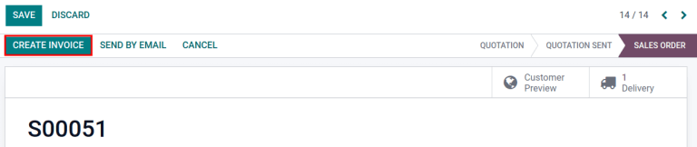

Facturación del costo de envío¶
Facturar a los clientes por envío después de la entrega asegura que los cambios sean correctos según los factures de envío en tiempo real, como distancia, peso y método.
En Odoo, los costos de envío se pueden facturar de dos formas:
Acuerde un precio fijo con el cliente e inclúyalo en la orden de venta.
Facture los costos de envío al cliente después de la entrega, los cuales reflejaran los gastos verdaderos de la empresa.
Configuración¶
Para configurar precios en métodos de envío, vaya a . En la sección Envío active la función Métodos de envío y después haga clic en Guardar.

Agregar métodos de envío¶
Después, configure el precio de cada método de entrega en y haga clic en el botón Crear. De esta forma se abrirá un formulario para brindar detalles sobre el transportista, como:
Método de envío (obligatorio): el nombre del método de envío (por ejemplo,
tarifa plana de envío,entrega el mismo día, etc.).Proveedor (obligatorio): seleccione un servicio de entrega, como FedEx, si utiliza un transportista externo. Asegúrese de que la integración con el transportista está instalada de manera correcta y seleccione el proveedor en el menú desplegable.
Ver también
Empresa: si el método de envío debe aplicarse a una empresa en específico, selecciónela en el menú desplegable. Deje el campo vacío para aplicar ese método a todas las empresas.
Sitio web: configure métodos de envío para una página de comercio electrónico. Seleccione el sitio web aplicable en el menú desplegable o déjelo vacío para aplicar el método a todas las páginas web.
Producto de envío (obligatorio): el producto que aparece en la línea de la orden de venta como el cargo por el envío.
Gratis si el importe de la orden es superior a: al seleccionar esta casilla, el cliente no pagará por el envío si el importe total de su orden es mayor al importe especificado.
Facturar costo en la orden de venta¶
Para facturar costos de envío en una orden de venta antes de que el artículo se entregue, vaya a la y seleccione la orden de venta deseada.
En la orden de ventas haga clic en el botón Agregar envío en la esquina inferior derecha.

Seleccione el transportista deseado en el campo Método de envío de la ventana emergente Agregar un método de envío.
Después, haga clic en Obtener tarifa para calcular el precio de envío según la información de envío en tiempo real de la integración de Odoo con el transportista.
El Costo se calcula de forma automática usando el peso de los artículos en la orden. Finalmente, haga clic en el botón Agregar para cerrar la ventana.

En la orden de venta, el producto de envío aparecerá en la pestaña Líneas de la orden, el Precio unitario será el precio de envío calculado en la ventana emergente Agregar un método de envío.

Finalmente, después de que se entregue el producto, haga clic en Crear factura y se creará una factura en la que se incluirá el costo que se agregó antes.
Después, haga clic en Crear y ver factura y se generará un borrador de factura, con el costo de envío incluido en la pestaña Líneas de factura.

Facturar los precios de envío reales¶
Para modificar la factura de manera que refleje el costo de envío real, siga los pasos anteriores para crear una factura con el producto de entrega y Precio unitario de cero.
Después, en el borrador de la factura, modifique el Precio unitario para reflejar el precio de envío real. Finalmente, haga clic en Confirmar para emitir una factura al cliente con el precio de envío ajustado.

Ver también